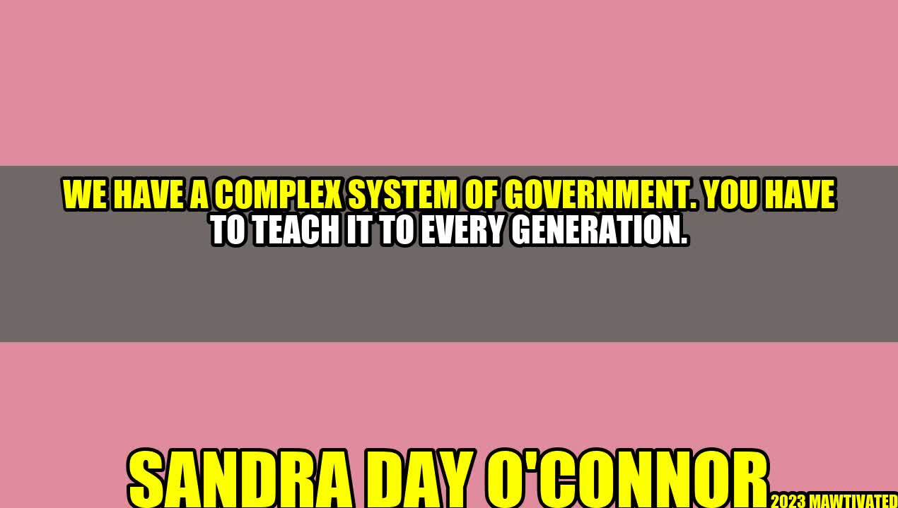

The Importance of Teaching Government to Every Generation

Have you ever heard of Sandra Day O'Connor? She was the first woman to serve as a justice on the United States Supreme Court. Despite facing gender discrimination early in her legal career, O'Connor persevered and eventually became one of the most respected legal minds in the country.
Justice O'Connor understood the importance of teaching government to every generation. She believed that a functioning democracy relies on an informed citizenry, and that this knowledge must not be taken for granted. The United States has a complex system of government, one that requires education and commitment from every citizen.
Why is it important to teach government?
There are several key reasons why it is important to teach government:
Informed citizens make better decisions. When people understand how the government works, they are better equipped to make informed decisions. This includes everything from how to vote in an election to how to write a letter to a congressman.
Democracy relies on active participation. A democracy is only as strong as the participation of its citizens. When people are knowledgeable about the workings of government, they are more likely to take an active role in their democracy.
To prevent tyranny. The best way to prevent tyranny is through educated citizens. When people are knowledgeable about their rights and the role of government, they will be better equipped to recognize and resist any attempts to limit their freedom.
These are just a few of the many reasons why teaching government is so important. It is not a subject that can be taken lightly - the future of our democracy depends on it.
How can we teach government effectively?
Teaching government is not an easy task. It requires patience, creativity, and a commitment to lifelong learning. Here are a few tips on how to do it effectively:
Make it relevant. Students are more likely to be engaged in the subject matter if they understand how it applies to their everyday lives. Find ways to connect government to current events or issues that are important to your students.
Make it interactive. Lectures can only do so much. Try incorporating games, simulations, or debates into the curriculum. This will help students to see the real-world applications of the concepts they are learning.
Make it fun. Let's face it - government can be a dry subject. But that doesn't mean it has to be boring. Use humor, visuals, or other creative elements to engage students and make the material more memorable.
These are just a few ideas. The key is to be creative and find what works best for you and your students.
"We have a complex system of government. You have to teach it to every generation." - Sandra Day O'Connor
Conclusion:
In conclusion, teaching government is an essential part of building and maintaining a healthy democracy. It is not only important for our future as a country, but for the future of our global community. By making government education relevant, interactive, and fun, we can inspire the next generation to actively participate in their democracy and make informed decisions.
Teaching government is essential to informed decision making
Active participation in democracy requires knowledge of government
Education is key to preventing tyranny
Let's commit to the teaching of government and ensure that every generation is equipped with the knowledge they need to participate in our democracy.
Curated by Team Akash.Mittal.Blog
Share on Twitter Share on LinkedIn